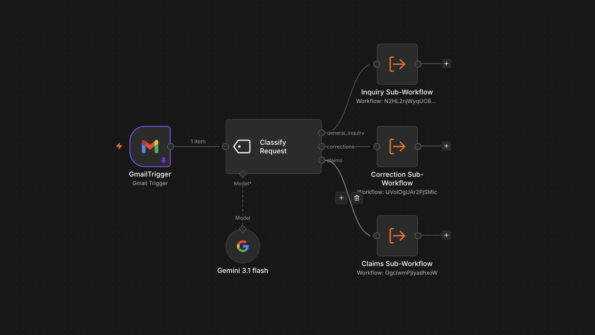

An AI-powered operations automation system for processing incoming utility-related emails. The workflow classifies requests, extracts relevant information, routes them to the appropriate process, and interacts with connected systems.

The main workflow acts as the entry point for incoming requests. It receives emails, uses AI to classify the request, and routes execution to specialized subworkflows based on the request type.
The workflow is divided into reusable components rather than placing all business logic in a single workflow. This keeps individual processes isolated and easier to maintain.
Incoming Email → AI Classification → Request Routing → Specialized Subworkflow → CRM / Database / Response